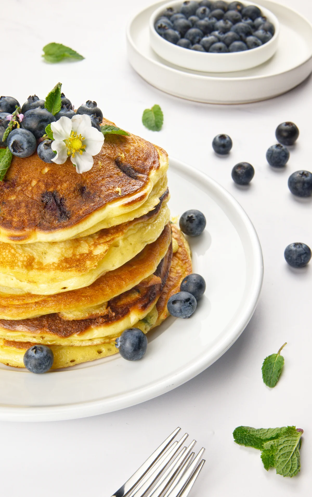
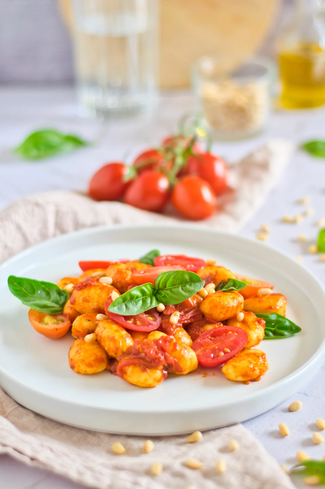
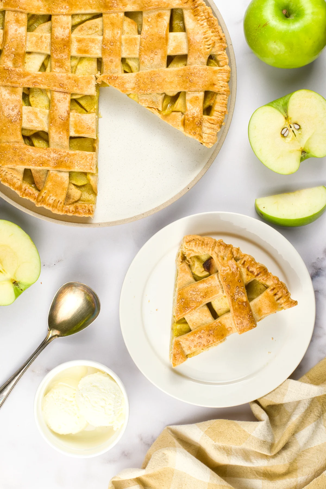

FOR FOOD BLOGGERS
Professional food photography and recipe content
From vegan bowls to Mediterranean spreads to Asian street food — we've shot it, cooked it, and styled it. Ten years in hospitality and food tech taught us what works behind the camera and behind a blog. We understand your world because we've lived it.



